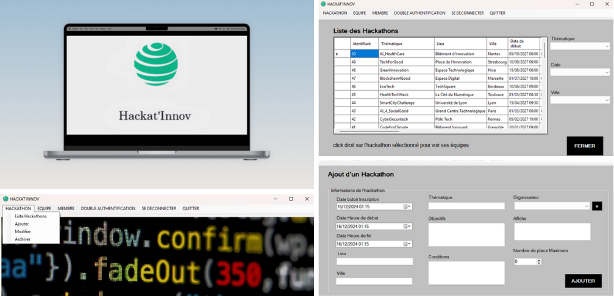

Hackat'Innov

Technologies : C#, .NET, Windows Forms, MySQL, PHPMyAdmin
Période : 9 semaines
Hackat’Innov est une plateforme de gestion complète de hackathons. Développée en C# avec .NET sous Windows Forms, elle vise à faciliter l’organisation d’événements collaboratifs autour du développement informatique. Le projet a été réalisé en équipe dans le cadre d’une simulation professionnelle.
L’application répond à des besoins concrets de gestion :
- Inscription et désinscription des équipes
- Création, modification et archivage des hackathons
- Gestion des membres, équipes et données associées
- Sécurité renforcée avec connexion administrateur et double authentification
En tant que développeur, j’ai travaillé sur :
- L’authentification (login sécurisé + 2FA)
- La gestion dynamique des hackathons (CRUD complet)
- Les formulaires de création / modification avec pré-remplissage
- Le système de notification par mail lors de désinscription
La base de données est hébergée via Dokploy, l'accès administrateur est sécurisé, et les actions sensibles sont toujours confirmées pour éviter les erreurs (pop-up, vérifications...).
Points positifs : nombreuses fonctionnalités ajoutées, sécurité solide, bonne architecture.
Axes d’amélioration : ajout d’un module Jury, tableaux de bord d’analyse, refonte graphique.
Outils utilisés : Visual Studio 2022, GitHub, Trello, Dokploy, PHPMyAdmin
Ce projet m’a permis de consolider mes compétences en programmation orientée objet, structuration de formulaires dynamiques, sécurisation d’accès et en gestion collaborative de projet. L’application est une base robuste et évolutive, destinée à être enrichie.
← Retour aux projets